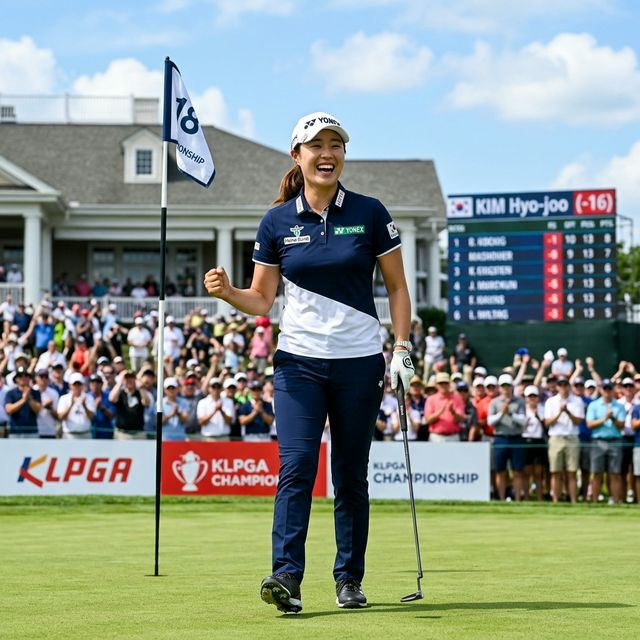
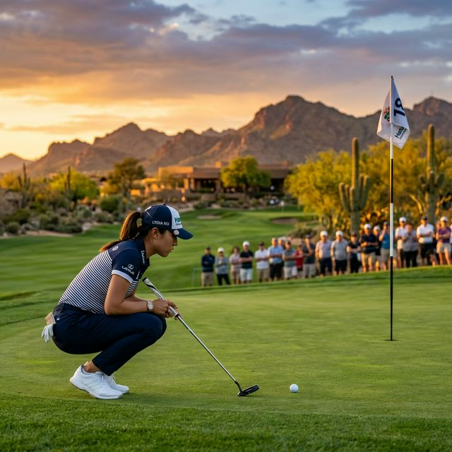

▲ 광활한 사막 지형을 끼고 있는 이번 코스는 장타보다는 정교한 쇼트 게임이 승부를 가릅니다. 김효주 선수에게 매우 유리한 환경입니다.

김효주는 오늘 2라운드에서 **이글 1개, 버디 3개, 보기 2개**를 묶어 3언더파 69타를 쳤습니다. 중간 합계 14언더파 130타를 기록한 김효주는 1라운드 단독 선두였던 리디아 고를 제치고 단독 2위에 랭크되었는데요. 특히 오늘 전반 홀에서 보여준 이글 샷은 갤러리들의 탄성을 자아내기에 충분했습니다.
오늘 경기의 핵심은 '침착함'이었습니다. 중반에 보기가 나오며 흔들릴 법한 상황에서도 김효주 특유의 리듬을 잃지 않고 후반 버디 몰아치기에 성공하며 순위를 지켜냈습니다. 샷의 정확도를 나타내는 그린 적중률은 80%를 상회하며 최근 물오른 컨디션을 가감 없이 증명했습니다.
지난주 포티넷 파운더스컵에서 우승 트로피를 들어 올린 김효주는 이번 대회에서도 강력한 우승 후보로 거론됩니다. LPGA 투어에서 2주 연속 우승은 체력적, 정신적으로 매우 큰 도전인데요. 하지만 현재 김효주의 퍼팅 지수는 투어 전체 1위를 다툴 정도로 안정적입니다.
주목할 포인트: 김효주 선수는 무빙 데이인 3라운드에서 몰아치기에 능한 공격적인 골퍼입니다. 내일은 더 과감한 핀 공략으로 선두 탈환과 격차 벌리기에 나설 것으로 보입니다.

1라운드 버디 12개로 '전설'을 썼던 리디아 고였지만, 2라운드에서는 애리조나의 강한 바람과 까다로운 핀 위치에 고전했습니다. 이 틈을 놓치지 않은 김효주의 추월은 이번 대회 최고의 관전 포인트입니다. 세계 랭킹 1위 탈환을 노리는 두 선수의 자존심을 건 승부가 무빙 데이에서 폭발할 예정입니다.
| 순위 | 선수 | 2R 스코어 | 합계 |
|---|---|---|---|
| 단독 2위 | 김효주 | 69 (-3) | -14 |
| 공동 5위 | 윤이나 | 66 (-6) | -11 |
| 공동 15위 | 유해란 | 70 (-2) | -8 |
| 공동 22위 | 신지은 | 71 (-1) | -6 |
오늘 2라운드에서 가장 눈에 띈 선수 중 한 명은 **윤이나**였습니다. 보기 없이 버디만 6개를 낚아채는 완벽한 바운스 백을 선보이며 공동 5위까지 뛰어올랐는데요. 장타를 앞세운 호쾌한 경기로 미국 현지 갤러리들의 마음을 사로잡고 있습니다. 김효주와 윤이나, 두 한국 선수가 최종 라운드 챔피언 조에서 만날 가능성도 농후해졌습니다.
현지 기상 예보에 따르면 3라운드가 열리는 3월 29일(현지시간)은 기온이 상승하고 건조한 바람이 불 것으로 보입니다. 그린이 더 딱딱해지면 김효주처럼 공을 높게 띄워 세우는 능력이 있는 선수가 절대적으로 유리합니다.
전 세계 골프 팬들은 현재 김효주 선수의 압도적인 샷 메이킹에 찬사를 보내고 있습니다. SNS에서는 "The World's Best Swing is Hyo-Joo Kim"이라는 반응이 쏟아지고 있는데요. 특히 한국 팬들은 "효주 선수, 내일도 미소 샷 부탁해요!", "2주 연속 우승으로 일요일 아침을 화사하게 만들어주세요"라며 뜨거운 응원을 보내고 있습니다.
그린 주변의 모래 트랩이 깊어 낙구 지점을 정교하게 계산해야 합니다. 김효주의 주전공입니다.
3라운드 무빙 데이는 한국 시간으로 내일(3/29) 오전 7시부터 JTBC 골프 채널을 통해 생중계됩니다.
이번 대회 총상금은 225만 달러(약 30억 원). 김효주가 우승할 경우 올 시즌 상금 왕 경쟁에서 독주 체제를 굳히게 됩니다.
아름다운 스윙만큼이나 단단한 내면을 가진 김효주 선수. 오늘 2라운드에서의 단독 2위 기록은 단순한 숫자가 아닌 그녀의 피땀 어린 노력의 결과물입니다. 남은 3, 4라운드에서도 부상 없이 최고의 경기를 보여주길 전 세계 팬들과 함께 기원합니다. 그녀의 미소가 애리조나의 태양 아래 우승컵과 함께 빛나길 응원하겠습니다!